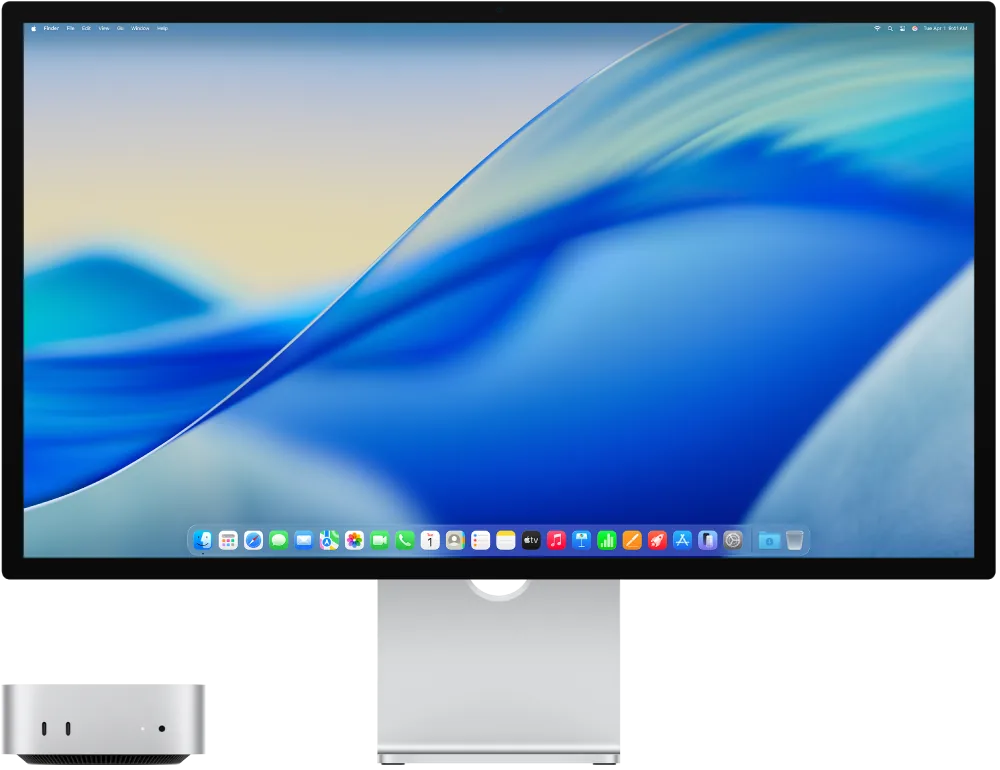
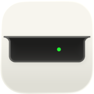

01 · Música
Tu música, viva.
Portada real, progreso y controles. La onda toma los colores del disco y late con la canción. Música, Spotify, Apple TV y QuickTime.
Música, avisos, agenda, teleprompter y deporte en directo, justo donde ya miras. Nativa en Swift, ligera y privada.
01 · Música
Portada real, progreso y controles. La onda toma los colores del disco y late con la canción. Música, Spotify, Apple TV y QuickTime.
02 · Avisos
AirPods, carga, modo silencio o Wi‑Fi: el notch te lo cuenta en un gesto y vuelve a su sitio.
03 · Agenda
Próximos eventos del Calendario y tus Recordatorios, que completas con un clic sin abrir ninguna app.
04 · Accesos rápidos
Elige hasta cuatro apps y ábrelas desde el notch sin buscarlas: Safari, Notas, Captura de pantalla o las que tú quieras.
05 · Teleprompter
Tu guion junto a la cámara para grabar o presentar con naturalidad. Escríbelo en el notch y pulsa VER.
06 · Disco
El notch respira con el ritmo y brilla con el color de la portada.
07 · Modo burbuja
La misma experiencia flota sobre tu escritorio en cualquier Mac o pantalla externa.
08 · Sports
Marcador en directo con la muesca cerrada. El Mundial 2026 es gratis; LaLiga, Premier, NBA, F1 y 15 competiciones más, con la suscripción opcional.
Diseño y utilidad

Uso mínimo de memoria.
Prácticamente nada en reposo.
Apenas toca tu batería.
Opiniones
“Es un antes y un después. He pasado de tener una pestaña que no sirve para nada a darle utilidad real.”
“Parece una app nativa de lo bien implementada que está. Una vez la usas, ya no hay vuelta atrás.”
“Es la mejor app para el notch, le da vida. No sé por qué Apple nunca lo hizo antes.”
“Super clean and aesthetic, wow! Great work developer.”
“La interfaz es limpia e intuitiva y no afecta en nada al rendimiento. Hace justo lo que promete.”
“Simplemente perfecto, algo que debería estar implementado nativamente en Apple.”
“Una de las mejores apps notch que existen: súper sencilla pero demasiado funcional.”
“Fluida, amigable y súper limpia.”
Precio
Sin suscripción para lo esencial. Las actualizaciones están incluidas y todo funciona en tu Mac.
VibeNotch
Utilidades · Mac App Store
4,99 €pago único
Sports para el resto de competiciones es una suscripción opcional dentro de la app.
Sí. El modo burbuja coloca la misma interfaz flotando en la parte superior de la pantalla, en cualquier Mac con macOS 14 o posterior. También puedes elegir en qué pantalla aparece.
No. VibeNotch es un pago único de 4,99 € con las actualizaciones incluidas. Solo las competiciones extra de Sports usan una suscripción opcional; el Mundial 2026 es gratis.
Prácticamente nada. Está escrita en Swift nativo: menos de 60 MB de memoria y menos del 1 % de CPU en reposo. Si no usas una función, como Sports o el teleprompter, puedes desactivarla y no se carga.
Ningún dato personal. No hay cuentas ni analítica: tu música, tu agenda y tus recordatorios se leen en tu Mac y no salen de él. Sports solo consulta marcadores públicos mientras hay partidos.
Con Música de Apple, Spotify, Apple TV y QuickTime. Verás la portada real, el título, el artista y el progreso, y podrás controlar la reproducción desde el notch.
Sí. Puedes ajustar el ancho, el alto y las esquinas, elegir entre expandir al pasar el cursor o con un clic, y activar o desactivar cada aviso.

Descarga VibeNotch y dale vida a la parte de la pantalla que más miras.
Descargar en la Mac App Store